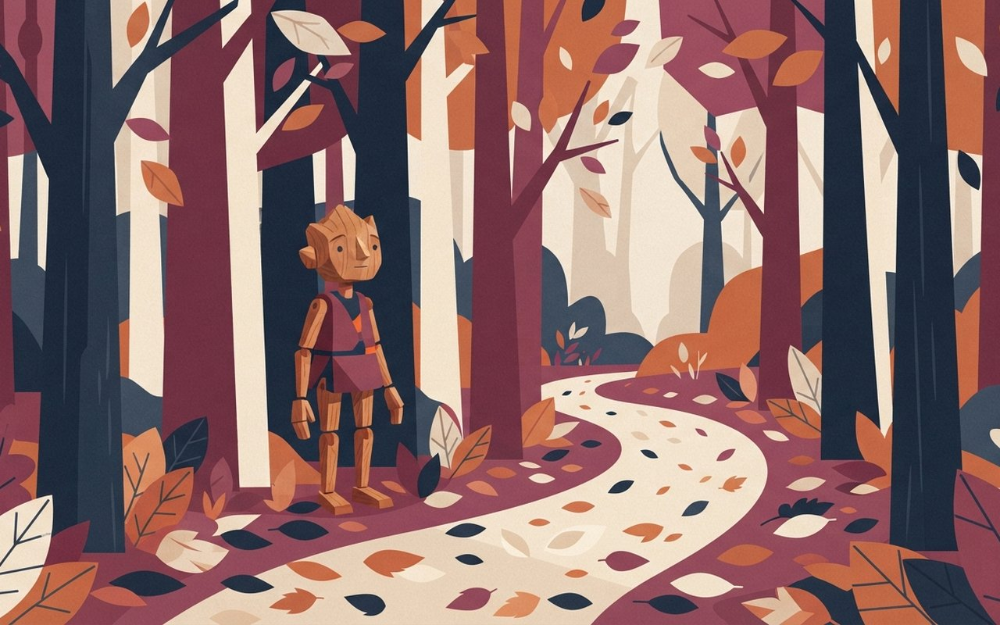

11월 8일(일)까지예요. 신세계백화점 F&B 매장은 1만 원 이상 구매 시 5,000원, 롯데마트는 행사카드 결제 시 수입 삼겹·목심이 50% 할인돼요.
Activity Brief — 2026.11.05
Weekly Activity · 액티비티·쇼핑
입동 주말, 광안리 불꽃축제부터 서울 단풍길·쓱데이 마지막 날까지
2026년 11월 5일 목요일6 Picks · 주말 나들이
이번 주말은 입동인 7일 아침 수도권이 영하권으로 내려갈 수 있어 두꺼운 겉옷이 필요합니다. 7일 밤 광안리에서는 부산불꽃축제가 열리고, 서울에서는 북서울미술관 아트북페어와 서울대공원 가을축제가 이어집니다. 서울 단풍은 11월 초·중순이 절정으로 예상돼 단풍길을 서두르는 편이 좋고, 쓱데이 등 일부 유통가 할인은 8일에 끝납니다.
🎧 듣기 · 약 1분
🎧 낭독 원고 보기
11월 5일 목요일, 액티비티 브리프입니다. 이번 주말 가볼 만한 곳을 소개합니다.
토요일 밤 7시, 광안리에서 부산불꽃축제 본행사가 열립니다. 오후 4시에는 블랙이글스 에어쇼 같은 사전행사가 열리고, 광안대교는 일찍부터 통제되니 대중교통을 권합니다.
북서울미술관에서는 무료 아트북페어가 일요일까지 이어지고, 주말에는 라이브 드로잉과 손글씨 경필대회가 열립니다.
서울대공원에서는 토요일과 일요일 피노키오의 숲 가을축제가 열리고, 낙엽길 인증사진 자랑과 어린이 그림대회가 있습니다.
쓱데이 등 일부 유통가 할인은 일요일에 마무리됩니다. 신세계백화점은 식품 매장 구매 할인을 하고, 롯데마트는 행사카드로 결제하면 수입 삼겹살을 반값에 팝니다.
서울 단풍길은 11월 초중순이 절정으로 예상되니 서두르세요.
경산에서는 반려견과 함께 3킬로미터를 걷는 축제가 열립니다. 이번 주말은 아침 기온이 낮으니 따뜻하게 입으세요. 자세한 정보는 카드에서 확인하세요.
이번 주말 날씨 — 뉴스1(11/4)은 5일 비가 그치고 6일 찬 북서풍에 기온이 5~8도 떨어지며, 입동인 7일(토) 아침 수도권·강원 내륙이 영하권이라고 전했다. 뉴스1은 최저 영하 4도까지 내려갈 수 있다고 했다. 토요일 낮 기온과 일요일 예보는 확인하지 못했다. 출발 전 기상청 예보를 확인하자 ⚠ 변동 가능 (뉴스1 기사).
Night — 부산 광안리
花
부산 불꽃
부산불꽃축제 7일 광안리 — 본행사 19시, 광안대교 15:30부터 통제
제21회 부산불꽃축제가 11월 7일(토) 광안리해수욕장·이기대·동백섬에서 열린다. 본행사는 19:00~20:00이다. 사전행사로 16시에 블랙이글스 에어쇼(10분)가 있고 북크닉과 인디밴드 공연도 열린다. 일요일은 해당이 없다.
유료좌석은 약 1만 7천석이고 부산시민은 R·S석을 10% 할인받는다(좌석 가격은 기사에 없음). 광안대교는 상층 15:30부터, 하층 18:30~자정 전면 통제되며 주변 도로도 순차 통제된다. 도시철도를 늘리고 시내버스를 집중 배차하니 대중교통이 권장된다.
일시·장소11/7(토) 본행사 19:00~20:00 · 광안리해수욕장·이기대·동백섬
사전행사16시 블랙이글스 에어쇼 10분 · 북크닉·인디밴드 공연
좌석유료좌석 약 1만 7천석 · 부산시민 R·S석 10% 할인 · 좌석 가격은 기사에 없음
교통광안대교 상층 15:30~, 하층 18:30~자정 전면 통제 · 도시철도 증편 · 시내버스 집중배차
주의일정·통제 시간은 변경될 수 있음 ⚠ 변동 가능 · 공식 안내 확인 권장
🎨 알고 가면 달라지는 것
행사장 반경 500m 숙박요금이 평소보다 평균 94.5% 올랐다고 전해졌다. 인상률 20% 이하 '공정가격' 업소 34곳은 11월 8일까지 비짓부산에서 확인할 수 있다.
서울대공원 가을축제가 11월 7일(토)~8일(일) 만남의 광장 일대(행정구역상 과천)에서 열린다. 전이수 작가의 야외전시 '진짜가 되는 숲', 어린이 그림대회, 낙엽길 인증사진 자랑, 목공·공방 체험이 마련된다.
요금·예약·교통은 기사에 없다. 문의는 02-500-7022다.
일시·장소11/7(토)~8(일) · 서울대공원 만남의 광장 일대(과천)
프로그램전이수 작가 야외전시 '진짜가 되는 숲' · 어린이 그림대회 · 낙엽길 인증사진 자랑 · 목공·공방 체험
요금·예약·교통기사에 없음 · 문의 02-500-7022 ⚠ 변동 가능
🎨 알고 가면 달라지는 것
'낙엽길 인증사진 자랑'이 있어 단풍철 코스와 묶기 좋다. 아침 기온이 낮을 수 있으니 아이와 간다면 겉옷부터 챙기자.
서울시 — 서울대공원 가을축제서울시 뉴스(발행일시 미표기, 수정일 10/30) · 단일 출처 · 요금·예약은 본문에 없음 (확인 2026-11-05)
서울대공원 가을축제, 피노키오의 숲
11월 7일과 8일 서울대공원 만남의 광장 일대에서 열려요. 야외전시와 어린이 그림대회, 낙엽길 인증사진 자랑, 목공 체험이 있어요.
서울
11/7~11/8
A forest path covered with autumn leaves with a gentle wooden puppet sculpture among trees, outdoor art exhibition, flat illustration, no text, no logos

Shopping — 유통가
買
쓱데이 마지막 주말
쓱데이·롯데마트 할인 8일 마감 — 신세계 F&B 5,000원 할인, 수입 삼겹 행사카드 50%
신세계백화점은 11월 6~8일 F&B 매장에서 1만 원 이상 구매하면 5,000원을, 푸드마켓에서 3만 원 이상 구매하면 5,000원을, 와인은 10만 원 이상 구매하면 1만 원을 깎아 준다. 나이키는 11월 4~8일 전 품목 최대 30% 할인이다.